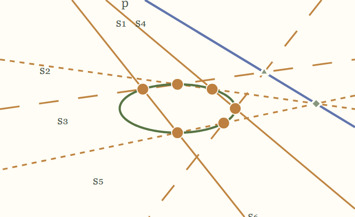
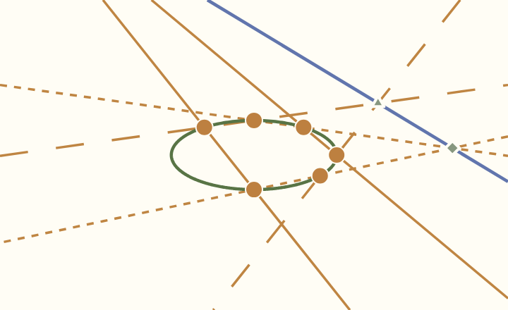

<!doctype html>
<html lang="en"><head><meta charset="utf-8"><meta name="viewport" content="width=device-width, initial-scale=1">
<title>Bezeg graphs: batch B8d, B-splines and projective</title>
<style>
body{margin:0;padding:24px;background:#f5f7ef;color:#2f3a31;font:16px/1.5 Georgia,serif}main{max-width:1500px;margin:0 auto}
h1{font-size:1.8rem;font-weight:500;margin:0 0 8px}h2{font-size:1.3rem;font-weight:600;margin:40px 0 4px}
.pair{display:grid;grid-template-columns:repeat(auto-fit,minmax(340px,1fr));gap:16px;margin-top:12px}
figure{margin:0;background:#fffdf5;border:1px solid #d5dccf;border-radius:6px;padding:10px}
figcaption{font:600 .85rem/1.3 system-ui,sans-serif;text-transform:uppercase;color:#5b6a5c;margin-bottom:6px}
video{width:100%;height:auto;display:block}
<h1>Batch B8f: capture-tool repairs (G03, G04)</h1><h2>1. projective-pascal</h2><p>Remove: the line labels s1..s6 and p now go with the rest of the text (capture tool judged only text objects before, not line labels).</p><div class="pair"><figure><figcaption>Before</figcaption></figure><figure><figcaption>After</figcaption></figure></div>
<h2>2. linear-map</h2><p>Keep in part: a1 = (2, 1), a2 stay; the clip colour check samples a pure background pixel (611, 11).</p><div class="pair"><figure><figcaption>Before</figcaption><video src="before/linear-map.webm" poster="before/linear-map.png" autoplay loop muted playsinline></video></figure><figure><figcaption>After</figcaption><video src="after/linear-map.webm" poster="after/linear-map.png" autoplay loop muted playsinline></video></figure></div>
<h2>3. monotone-triangulation</h2><p>Remove: no text; the capture no longer crashes (full settle only after the last of 33 presses).</p><div class="pair"><figure><figcaption>Before</figcaption><video src="before/monotone-triangulation.webm" poster="before/monotone-triangulation.png" autoplay loop muted playsinline></video></figure><figure><figcaption>After</figcaption><video src="after/monotone-triangulation.webm" poster="after/monotone-triangulation.png" autoplay loop muted playsinline></video></figure></div>
</main></body></html>
